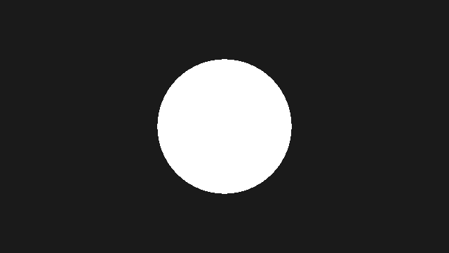
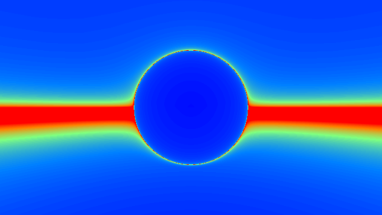

第 2 章 レイマーチングの原理
この章では、画面の各ピクセルからレイを作る方法と、SDF を使ってレイと表面の交点を求めるスフィアトレーシングを説明し、最初の 3D の球を描く。
レイトレーシングとレイマーチング
3D シーンを画面に描く方法の 1 つに、視点から各ピクセルを通る半直線（レイ）を飛ばし、最初に当たった物体の色をそのピクセルの色とする方法がある。この方法を総称して レイトレーシング と呼ぶ。
レイと物体の交点を求める方法は、形状の表し方によって異なる。球や平面、三角形のように交点を解析的に求められる形状では、方程式を解けば交点が得られる。一方、レイマーチング では、レイに沿って少しずつ点を進め、各点で形状の内外や表面までの距離を調べて交点を探す。形状を方程式で解く必要がないため、解析的に交点を求めにくい複雑な形状でも扱える。
レイマーチングの中でも、進む距離を SDF の値で決める方法を スフィアトレーシング と呼ぶ（Hart, 1996）。本資料で「レイマーチング」と言う場合は、特に断らない限りスフィアトレーシングを指す。
レイの表現
レイは、始点 \(\mathbf{o}\) と単位ベクトルの方向 \(\hat{\mathbf{d}}\) を使って次のように表す。
\(\hat{\mathbf{d}}\) が単位ベクトルなので、パラメーター \(t\) は始点からの距離そのものになる。サンプルコードでは、始点を ro （ray origin）、方向を rd （ray direction）という変数名で表す。
カメラとレイの生成
ピンホールカメラ
最も簡単なカメラモデルは、1 点（視点）からスクリーンの各ピクセルに向かってレイを飛ばすピンホールカメラである。視点を原点に置き、\(-z\) 方向を向いているとする。視点から距離 \(f\) の位置にスクリーンを置くと、第 1 章で求めた正規化座標 \(\mathbf{p} = (p_x, p_y)\) のピクセルに向かうレイの方向は次のようになる。
\(f\) を 焦点距離 と呼ぶ。\(p_y\) の範囲は \(-1\) 〜 \(1\) なので、縦方向の 視野角 \(\theta\) と焦点距離には次の関係がある。
例えば \(f = 1.5\) では約 67°、\(f = 2\) では約 53° になる。焦点距離を大きくするほど視野が狭くなり、望遠レンズで見たような画像になる。
ルックアットカメラ
カメラを任意の位置 \(\mathbf{o}\) に置き、注視点 \(\mathbf{a}\) の方を向かせるには、カメラの座標軸を表す 3 つの単位ベクトルを次のように求める。
\(\hat{\mathbf{w}}\) は前方、\(\hat{\mathbf{u}}\) は右、\(\hat{\mathbf{v}}\) は上を向く。\(\hat{\mathbf{y}} = (0, 1, 0)\) はワールド座標の上方向である。これらを列ベクトルとする行列 \(M = [\hat{\mathbf{u}}\ \hat{\mathbf{v}}\ \hat{\mathbf{w}}]\) を使うと、レイの方向は次のようになる。
\(M\) は直交行列でベクトルの長さを変えないため、正規化は行列を掛ける前に行っても後に行ってもよい。第 3 章以降のサンプルでは、この行列を関数 setCamera で求める。
113// カメラ位置 ro から注視点 ta を向くカメラ行列 (第 2 章)
114mat3 setCamera(vec3 ro, vec3 ta)
115{
116 vec3 cw = normalize(ta - ro);
117 vec3 cu = normalize(cross(cw, vec3(0.0, 1.0, 0.0)));
118 vec3 cv = cross(cu, cw);
119 return mat3(cu, cv, cw);
120}
122void mainImage(out vec4 fragColor, in vec2 fragCoord)
123{
124 vec2 p = (2.0 * fragCoord - iResolution.xy) / iResolution.y;
125
126 vec3 ro = vec3(0.0, 6.0, 7.0);
127 vec3 ta = vec3(0.0, 0.5, 0.0);
128 vec3 rd = setCamera(ro, ta) * normalize(vec3(p, 2.5));
129
130 vec3 col = vec3(0.1);
131 float t = raymarch(ro, rd);
132 if (t > 0.0) {
133 col = shade(ro + t * rd);
134 }
135 fragColor = vec4(col, 1.0);
136}
カメラが真上や真下を向くと \(\hat{\mathbf{w}}\) と \(\hat{\mathbf{y}}\) が平行になり、外積が 0 になって \(\hat{\mathbf{u}}\) が求められない。本資料のサンプルでは、カメラがこの向きにならないように配置している。
符号付き距離関数
定義
空間内の形状 \(\Omega\) に対し、その SDF \(f\) を次のように定義する。
\(\partial\Omega\) は形状の表面（境界）である。つまり \(f\) は表面までの最短距離に、外側なら正、内側なら負の符号を付けたものである。表面は \(f(\mathbf{p}) = 0\) を満たす点の集合（ゼロ等値面）として表される。
性質
SDF には、レイマーチングで重要になる次の 2 つの性質がある。
リプシッツ連続性: 任意の 2 点 \(\mathbf{p}\)、\(\mathbf{q}\) について \(|f(\mathbf{p}) - f(\mathbf{q})| \le |\mathbf{p} - \mathbf{q}|\) が成り立つ。すなわち、\(f\) は リプシッツ定数 1 のリプシッツ連続な関数である。
勾配の大きさが 1: \(f\) が微分可能な点では \(|\nabla f| = 1\) であり、\(\nabla f\) は最も近い表面から遠ざかる方向を向く。表面上では \(\nabla f\) が外向きの法線になる。この性質は第 5 章で法線を求めるときに使う。
1 の性質から、点 \(\mathbf{p}\) を中心とする半径 \(|f(\mathbf{p})|\) の球の内部には表面が存在しないことがわかる。スフィアトレーシングはこの性質を利用する。
スフィアトレーシング
アルゴリズム
スフィアトレーシングでは、レイの上の点 \(\mathbf{p}(t_i)\) での SDF の値だけ \(t\) を進める操作を繰り返す。
点 \(\mathbf{p}(t_i)\) を中心とする半径 \(f(\mathbf{p}(t_i))\) の球の内部には表面が無いので、その半径だけ進んでも表面を通り過ぎることはない。表面に近づくほど SDF の値は小さくなり、1 回に進む距離も短くなる。そのため、点は表面の手前に向かって収束していく。
実際の計算では、次のいずれかの条件を満たしたときに反復を終える。
条件 |
意味 |
|---|---|
\(f(\mathbf{p}(t_i)) < \varepsilon\) |
表面に十分近づいたので、表面に当たったとみなす。\(\varepsilon\) は閾値（サンプルの |
\(t_i > t_{\max}\) |
十分遠くまで進んだので、何にも当たらなかったとみなす（ |
\(i \ge N\) |
反復回数の上限に達した（ |
SDF が厳密な距離ではなく、真の距離以下の値（距離の下界）を返す関数であっても、スフィアトレーシングは表面を通り過ぎない。進む距離が短くなるため反復回数は増えるが、描画結果は正しい。逆に、真の距離より大きな値を返す関数を使うと、表面を通り過ぎて穴が空いたように見えることがある。この問題と対策は第 9 章で扱う。
最初のレイマーチング
原点に半径 1 の球を置き、スフィアトレーシングで描く。この段階では陰影を付けず、レイが球に当たったピクセルを白、当たらなかったピクセルを暗い灰色で塗る。
1// 02_first_sphere.frag
2// 第 2 章: スフィアトレーシングで球を 1 つ描く (シルエットのみ)。
3
4const int MAX_STEPS = 100; // 最大反復回数
5const float MAX_DIST = 100.0; // これより遠くに進んだら当たらなかったとみなす
6const float SURF_DIST = 0.001; // これより近づいたら表面に当たったとみなす
7
8// 原点を中心とする半径 r の球の SDF
9float sdSphere(vec3 p, float r)
10{
11 return length(p) - r;
12}
13
14// シーン全体の SDF
15float map(vec3 p)
16{
17 return sdSphere(p, 1.0);
18}
19
20// レイ ro + t * rd を進め、表面に当たった t を返す。当たらなければ -1.0
21float raymarch(vec3 ro, vec3 rd)
22{
23 float t = 0.0;
24 for (int i = 0; i < MAX_STEPS; i++) {
25 float d = map(ro + t * rd);
26 if (d < SURF_DIST) {
27 return t;
28 }
29 t += d; // 最も近い表面までの距離だけ安全に進める
30 if (t > MAX_DIST) {
31 break;
32 }
33 }
34 return -1.0;
35}
36
37void mainImage(out vec4 fragColor, in vec2 fragCoord)
38{
39 vec2 p = (2.0 * fragCoord - iResolution.xy) / iResolution.y;
40
41 // カメラは z = 3 に置き、-z 方向を向く。1.5 は焦点距離
42 vec3 ro = vec3(0.0, 0.0, 3.0);
43 vec3 rd = normalize(vec3(p, -1.5));
44
45 float t = raymarch(ro, rd);
46
47 vec3 col = vec3(0.1); // 背景
48 if (t > 0.0) {
49 col = vec3(1.0); // 球に当たったピクセルは白
50 }
51 fragColor = vec4(col, 1.0);
52}
02_first_sphere.frag をダウンロード ｜ ブラウザーで実行
関数 map はシーン全体の SDF を返す。シーンに物体を追加するときは、この関数だけを書き換えればよい。関数 raymarch がスフィアトレーシングの本体で、表面に当たったときはその \(t\) を、当たらなかったときは \(-1\) を返す。カメラは \(z = 3\) に置き、\(-z\) 方向を向いている（42〜43 行目）。

02_first_sphere.frag の実行結果。陰影が無いため、球は白い円に見える。
反復回数の可視化
スフィアトレーシングの挙動を理解するために、各ピクセルで反復を終えるまでの回数を色で表示してみる。次のサンプルでは、球の下に平面を追加し、反復回数が少ないほど青く、多いほど赤く表示する。
25// 反復回数を返す
26int raymarchSteps(vec3 ro, vec3 rd)
27{
28 float t = 0.0;
29 for (int i = 0; i < MAX_STEPS; i++) {
30 float d = map(ro + t * rd);
31 if (d < SURF_DIST || t > MAX_DIST) {
32 return i;
33 }
34 t += d;
35 }
36 return MAX_STEPS;
37}
02_step_count.frag をダウンロード ｜ ブラウザーで実行

02_step_count.frag の実行結果
球の正面や、平面を見下ろす方向のレイは、少ない反復で表面に到達する。一方、球の輪郭の付近と、画面中央の地平線の付近は赤くなっている。これは、レイが表面とほぼ平行に進むため、表面までの距離が小さいまま少しずつしか進めないからである。特に地平線付近では、上限の 100 回に達しても結果が確定しないピクセルがある。このように、レイマーチングの計算量は場所によって大きく異なる。